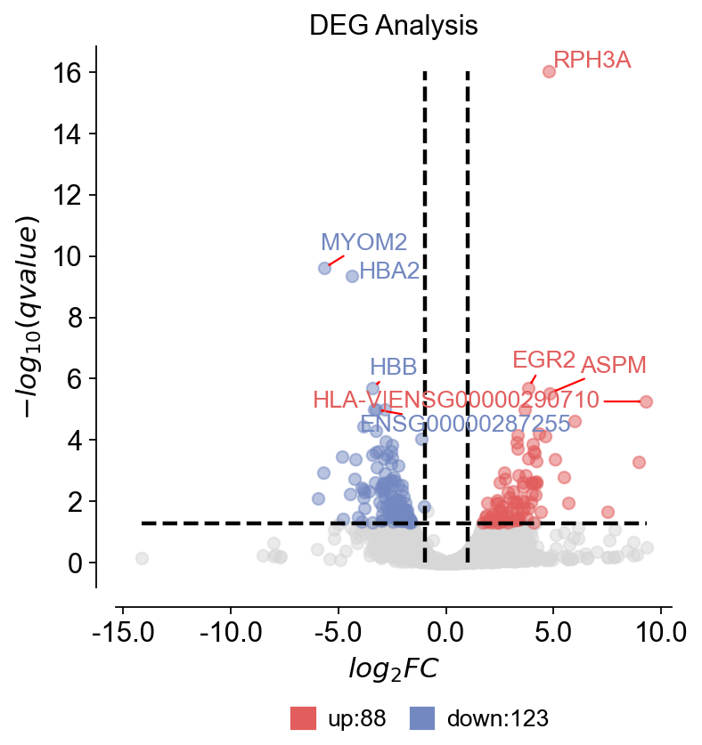
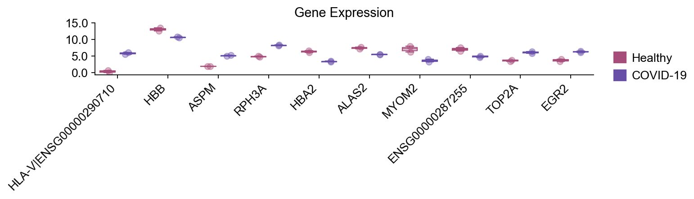
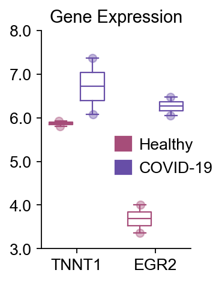

Bulk RNA-seq mapping with STAR¶
This notebook demonstrates an end-to-end bulk RNA-seq workflow in OmicVerse, starting from raw reads and ending with differential expression (DE) results and visualization.
Workflow
Import OmicVerse and set plotting style
Download paired-end FASTQ from SRA
Quality control and trimming (fastp)
Download reference genome and annotation (Ensembl GRCh38 release 115)
Align reads with STAR
Gene-level quantification (featureCounts)
Differential expression and visualization (pyDEG)
Note
The full tutorial series can continue from DE into functional enrichment and PPI network analysis. This notebook focuses on the core preprocessing + DE workflow.
Requirements
External tools:
fasterq-dump(SRA Toolkit),fastp,STAR, andfeatureCounts(Subread).Storage: FASTQ + alignment outputs can be large; ensure adequate disk space.
Memory: STAR genome indexing/alignment can require high RAM (see the STAR step below).
1) Import OmicVerse¶
We first import OmicVerse and configure a consistent plotting style. ov.style(font_path='Arial') will download/install the font if it is not available locally.
import omicverse as ov
ov.style(font_path='Arial')
🔬 Starting plot initialization...
Downloading Arial font from GitHub...
Arial font downloaded successfully to: /tmp/omicverse_arial.ttf
Registered as: Arial
🧬 Detecting GPU devices…
✅ NVIDIA CUDA GPUs detected: 1
• [CUDA 0] NVIDIA H100 80GB HBM3
Memory: 79.1 GB | Compute: 9.0
____ _ _ __
/ __ \____ ___ (_)___| | / /__ _____________
/ / / / __ `__ \/ / ___/ | / / _ \/ ___/ ___/ _ \
/ /_/ / / / / / / / /__ | |/ / __/ / (__ ) __/
\____/_/ /_/ /_/_/\___/ |___/\___/_/ /____/\___/
🔖 Version: 1.7.9rc1 📚 Tutorials: https://omicverse.readthedocs.io/
✅ plot_set complete.
2) Download FASTQ data from SRA¶
We download 4 paired-end samples as a lightweight example:
Disease group:
SRR12544419,SRR12544421Healthy group:
SRR12544529,SRR12544531
▲ CRITICAL
ov.alignment.fqdump() will prioritize using pre-downloaded SRA files found in sra_dir. If not found, it will download the data and convert it into FASTQ according to library_layout.
fq_data = ov.alignment.fqdump(
# Download 4 samples as example
sra_ids=['SRR12544419','SRR12544421',#disease group
'SRR12544529','SRR12544531',# healthy group
],
sra_dir = "./data",
temp_dir = './data/tmp',
output_dir="./data/fqdata",
library_layout="paired", # pair-end data
)
print(fq_data)
>> /home/groups/xiaojie/steorra/env/omicverse/bin/fasterq-dump SRR12544529 -O data/fqdata/SRR12544529 -e 8 --mem 4G --split-files --progress -t data/tmp/SRR12544529
>> /home/groups/xiaojie/steorra/env/omicverse/bin/fasterq-dump SRR12544421 -O data/fqdata/SRR12544421 -e 8 --mem 4G --split-files --progress -t data/tmp/SRR12544421
>> /home/groups/xiaojie/steorra/env/omicverse/bin/fasterq-dump SRR12544531 -O data/fqdata/SRR12544531 -e 8 --mem 4G --split-files --progress -t data/tmp/SRR12544531
>> /home/groups/xiaojie/steorra/env/omicverse/bin/fasterq-dump SRR12544419 -O data/fqdata/SRR12544419 -e 8 --mem 4G --split-files --progress -t data/tmp/SRR12544419
join :| 0.00% 0.01% 0.02% 0.03% 0.04% 0.05% 0.06% 0.07% 0.08% 0.09% 0.10% 0.11% 0.12% 0.13% 0.14% 0.15% 0.16% 0.17% 0.18% 0.19% 0.20% 0.21% 0.22% 0.23% 0.24% 0.25% 0.26% 0.27% 0.28% 0.29% 0.30% 0.31% 0.32% 0.33% 0.34% 0.35% 0.36% 0.37% 0.38% 0.39% 0.40% 0.41% 0.42% 0.43% 0.44% 0.45% 0.46% 0.47% 0.48% 0.49% 0.50% 0.51% 0.52% 0.53% 0.54% 0.55% 0.56% 0.57% 0.58% 0.59% 0.60% 0.61% 0.62% 0.63% 0.64% 0.65% 0.66% 0.67% 0.68% 0.69% 0.70% 0.71% 0.72% 0.73% 0.74% 0.75% 0.76% 0.77% 0.78% 0.79% 0.80% 0.81% 0.82% 0.83% 0.84% 0.85% 0.86% 0.87% 0.88% 0.89% 0.90% 0.91% 0.92% 0.93% 0.94% 0.95% 0.96% 0.97% 0.98% 0.99%- 1.00% 1.01% 1.02% 1.03% 1.04% 1.05% 1.06% 1.07% 1.08% 1.09% 1.10% 1.11% 1.12% 1.13% 1.14% 1.15% 1.16% 1.17% 1.18% 1.19% 1.20% 1.21% 1.22% 1.23% 1.24% 1.25% 1.26% 1.27% 1.28% 1.29% 1.30% 1.31% 1.32% 1.33% 1.34% 1.35% 1.36% 1.37% 1.38% 1.39% 1.40% 1.41% 1.42% 1.43% 1.44% 1.45% 1.46% 1.47% 1.48% 1.49% 1.50% 1.51% 1.52% 1.53% 1.54% 1.55% 1.56% 1.57% 1.58% 1.59% 1.60% 1.61% 1.62% 1.63% 1.64% 1.65% 1.66% 1.67% 1.68% 1.69% 1.70% 1.71% 1.72% 1.73% 1.74% 1.75% 1.76% 1.77% 1.78% 1.79% 1.80% 1.81% 1.82% 1.83% 1.84% 1.85% 1.86% 1.87% 1.88% 1.89% 1.90% 1.91% 1.92% 1.93% 1.94% 1.95% 1.96% 1.97% 1.98% 1.99% 2.00% 2.01% 2.02% 2.03% 2.04% 2.05% 2.06% 2.07% 2.08% 2.09% 2.10% 2.11% 2.12% 2.13% 2.14% 2.15% 2.16% 2.17% 2.18% 2.19% 2.20% 2.21% 2.22% 2.23% 2.24% 2.25% 2.26% 2.27% 2.28% 2.29% 2.30% 2.31% 2.32% 2.33% 2.34% 2.35% 2.36% 2.37% 2.38% 2.39% 2.40% 2.41% 2.42% 2.43% 2.44% 2.45% 2.46% 2.47% 2.48% 2.49% 2.50% 2.51% 2.52% 2.53% 2.54% 2.55% 2.56% 2.57% 2.58% 2.59% 2.60% 2.61% 2.62% 2.63% 2.64% 2.65% 2.66% 2.67% 2.68% 2.69% 2.70% 2.71% 2.72% 2.73% 2.74% 2.75% 2.76% 2.77% 2.78% ------------------------------------------------- 100%
concat :|-------------------------------------------------- 100%
spots read : 10,963,094
reads read : 21,926,188
reads written : 21,926,188
join :|-------------------------------------------------- 100%
concat :|-------------------------------------------------- 100%
spots read : 16,415,795
reads read : 32,831,590
reads written : 32,831,590
join :|-------------------------------------------------- 100%
concat :|-------------------------------------------------- 100%
spots read : 18,850,866
reads read : 37,701,732
reads written : 37,701,732
join :|-------------------------------------------------- 100%
concat :|-------------------------------------------------- 100%
spots read : 20,038,226
reads read : 40,076,452
reads written : 40,076,452
[{'srr': 'SRR12544419', 'fq1': 'data/fqdata/SRR12544419/SRR12544419_1.fastq', 'fq2': 'data/fqdata/SRR12544419/SRR12544419_2.fastq', 'layout': 'paired'}, {'srr': 'SRR12544421', 'fq1': 'data/fqdata/SRR12544421/SRR12544421_1.fastq', 'fq2': 'data/fqdata/SRR12544421/SRR12544421_2.fastq', 'layout': 'paired'}, {'srr': 'SRR12544529', 'fq1': 'data/fqdata/SRR12544529/SRR12544529_1.fastq', 'fq2': 'data/fqdata/SRR12544529/SRR12544529_2.fastq', 'layout': 'paired'}, {'srr': 'SRR12544531', 'fq1': 'data/fqdata/SRR12544531/SRR12544531_1.fastq', 'fq2': 'data/fqdata/SRR12544531/SRR12544531_2.fastq', 'layout': 'paired'}]
3) Quality control and trimming (fastp)¶
We run fastp on each sample and save the cleaned FASTQ files plus QC reports.
Outputs
Clean reads:
./result/fqdata/<sample>/*_clean_*.fastqReports:
*.fastp.jsonand*.fastp.html
⏱️ Runtime: typically ~tens of seconds for this small example, depending on compute and disk.
from operator import itemgetter
qc_result = ov.alignment.fastp(
samples=list(map(itemgetter("srr", "fq1", "fq2"), fq_data)),
output_dir = './result/fqdata')
print(qc_result)
>> /home/users/steorra/miniforge3/bin/fastp -i data/fqdata/SRR12544421/SRR12544421_1.fastq -o result/fqdata/SRR12544421/SRR12544421_clean_1.fastq -w 8 -j result/fqdata/SRR12544421/SRR12544421.fastp.json -h result/fqdata/SRR12544421/SRR12544421.fastp.html -I data/fqdata/SRR12544421/SRR12544421_2.fastq -O result/fqdata/SRR12544421/SRR12544421_clean_2.fastq --detect_adapter_for_pe
>> /home/users/steorra/miniforge3/bin/fastp -i data/fqdata/SRR12544419/SRR12544419_1.fastq -o result/fqdata/SRR12544419/SRR12544419_clean_1.fastq -w 8 -j result/fqdata/SRR12544419/SRR12544419.fastp.json -h result/fqdata/SRR12544419/SRR12544419.fastp.html -I data/fqdata/SRR12544419/SRR12544419_2.fastq -O result/fqdata/SRR12544419/SRR12544419_clean_2.fastq --detect_adapter_for_pe
>> /home/users/steorra/miniforge3/bin/fastp -i data/fqdata/SRR12544531/SRR12544531_1.fastq -o result/fqdata/SRR12544531/SRR12544531_clean_1.fastq -w 8 -j result/fqdata/SRR12544531/SRR12544531.fastp.json -h result/fqdata/SRR12544531/SRR12544531.fastp.html -I data/fqdata/SRR12544531/SRR12544531_2.fastq -O result/fqdata/SRR12544531/SRR12544531_clean_2.fastq --detect_adapter_for_pe
>> /home/users/steorra/miniforge3/bin/fastp -i data/fqdata/SRR12544529/SRR12544529_1.fastq -o result/fqdata/SRR12544529/SRR12544529_clean_1.fastq -w 8 -j result/fqdata/SRR12544529/SRR12544529.fastp.json -h result/fqdata/SRR12544529/SRR12544529.fastp.html -I data/fqdata/SRR12544529/SRR12544529_2.fastq -O result/fqdata/SRR12544529/SRR12544529_clean_2.fastq --detect_adapter_for_pe
Detecting adapter sequence for read1...
Detecting adapter sequence for read1...
Detecting adapter sequence for read1...
Detecting adapter sequence for read1...
CTCCTGGAAGTTAACTGCACCATCAGTGTTGATATCCAACTCTTTGAACCAGACGTCTGC
Detecting adapter sequence for read2...
CTGGAAGTTAACTGCACCATCAGTGTTGATATCCAACTCTTTGAACCAGACGTCTGCACC
Detecting adapter sequence for read2...
No adapter detected for read1
Detecting adapter sequence for read2...
GGCCACTGTGGTCTTAGGGGGTGCCCTCCCCGAGGCCTGGCTTATGGTGGTGGCCAGGGC
Detecting adapter sequence for read2...
GTGGCTCCTCGGCTTTGACAGAGTGCAAGACGATGACTTGCAAAATGTCGCAGCTGGAAC
GTGGCTCCTCGGCTTTGACAGAGTGCAAGACGATGACTTGCAAAATGTCGCAGCTGGAAC
GACACAACTGTGTTCACTAGCAACCTCAAACAGACACCATGGTGCACCTGACTCCTGAGG
GTGGCTCCTCGGCTTTGACAGAGTGCAAGACGATGACTTGCAAAATGTCGCAGCTGGAAC
Read1 before filtering:
total reads: 10963094
total bases: 559117794
Q20 bases: 553775494(99.0445%)
Q30 bases: 541507863(96.8504%)
Q40 bases: 0(0%)
Read2 before filtering:
total reads: 10963094
total bases: 559117794
Q20 bases: 544098436(97.3137%)
Q30 bases: 526334946(94.1367%)
Q40 bases: 0(0%)
Read1 after filtering:
total reads: 10687072
total bases: 544418300
Q20 bases: 539356482(99.0702%)
Q30 bases: 527511135(96.8945%)
Q40 bases: 0(0%)
Read2 after filtering:
total reads: 10687072
total bases: 544746875
Q20 bases: 537103434(98.5969%)
Q30 bases: 521266217(95.6896%)
Q40 bases: 0(0%)
Filtering result:
reads passed filter: 21374144
reads failed due to low quality: 487504
reads failed due to too many N: 1192
reads failed due to too short: 63348
reads failed due to adapter dimer: 0
reads with adapter trimmed: 134829
bases trimmed due to adapters: 2669503
Duplication rate: 15.5483%
Insert size peak (evaluated by paired-end reads): 71
JSON report: result/fqdata/SRR12544421/SRR12544421.fastp.json
HTML report: result/fqdata/SRR12544421/SRR12544421.fastp.html
/home/users/steorra/miniforge3/bin/fastp -i data/fqdata/SRR12544421/SRR12544421_1.fastq -o result/fqdata/SRR12544421/SRR12544421_clean_1.fastq -w 8 -j result/fqdata/SRR12544421/SRR12544421.fastp.json -h result/fqdata/SRR12544421/SRR12544421.fastp.html -I data/fqdata/SRR12544421/SRR12544421_2.fastq -O result/fqdata/SRR12544421/SRR12544421_clean_2.fastq --detect_adapter_for_pe
fastp v1.1.0, time used: 84 seconds
Read1 before filtering:
total reads: 20038226
total bases: 1021949526
Q20 bases: 1012475638(99.073%)
Q30 bases: 990432190(96.916%)
Q40 bases: 0(0%)
Read2 before filtering:
total reads: 20038226
total bases: 1021949526
Q20 bases: 1003879697(98.2318%)
Q30 bases: 975667178(95.4712%)
Q40 bases: 0(0%)
Read1 after filtering:
total reads: 19745691
total bases: 1006911636
Q20 bases: 997775728(99.0927%)
Q30 bases: 976169789(96.9469%)
Q40 bases: 0(0%)
Read2 after filtering:
total reads: 19745691
total bases: 1006642443
Q20 bases: 994858257(98.8294%)
Q30 bases: 968362375(96.1973%)
Q40 bases: 0(0%)
Filtering result:
reads passed filter: 39491382
reads failed due to low quality: 415354
reads failed due to too many N: 2198
reads failed due to too short: 167518
reads failed due to adapter dimer: 0
reads with adapter trimmed: 146355
bases trimmed due to adapters: 5132033
Duplication rate: 23.3277%
Insert size peak (evaluated by paired-end reads): 70
JSON report: result/fqdata/SRR12544529/SRR12544529.fastp.json
HTML report: result/fqdata/SRR12544529/SRR12544529.fastp.html
/home/users/steorra/miniforge3/bin/fastp -i data/fqdata/SRR12544529/SRR12544529_1.fastq -o result/fqdata/SRR12544529/SRR12544529_clean_1.fastq -w 8 -j result/fqdata/SRR12544529/SRR12544529.fastp.json -h result/fqdata/SRR12544529/SRR12544529.fastp.html -I data/fqdata/SRR12544529/SRR12544529_2.fastq -O result/fqdata/SRR12544529/SRR12544529_clean_2.fastq --detect_adapter_for_pe
fastp v1.1.0, time used: 117 seconds
Read1 before filtering:
total reads: 18850866
total bases: 961394166
Q20 bases: 952217279(99.0455%)
Q30 bases: 931109128(96.8499%)
Q40 bases: 0(0%)
Read2 before filtering:
total reads: 18850866
total bases: 961394166
Q20 bases: 931425457(96.8828%)
Q30 bases: 899828659(93.5962%)
Q40 bases: 0(0%)
Read1 after filtering:
total reads: 18263658
total bases: 930838151
Q20 bases: 922174625(99.0693%)
Q30 bases: 901889848(96.8901%)
Q40 bases: 0(0%)
Read2 after filtering:
total reads: 18263658
total bases: 930927790
Q20 bases: 917031645(98.5073%)
Q30 bases: 889662854(95.5673%)
Q40 bases: 0(0%)
Filtering result:
reads passed filter: 36527316
reads failed due to low quality: 1068046
reads failed due to too many N: 2060
reads failed due to too short: 103592
reads failed due to adapter dimer: 718
reads with adapter trimmed: 209233
bases trimmed due to adapters: 4077359
Duplication rate: 17.3068%
Insert size peak (evaluated by paired-end reads): 71
JSON report: result/fqdata/SRR12544419/SRR12544419.fastp.json
HTML report: result/fqdata/SRR12544419/SRR12544419.fastp.html
/home/users/steorra/miniforge3/bin/fastp -i data/fqdata/SRR12544419/SRR12544419_1.fastq -o result/fqdata/SRR12544419/SRR12544419_clean_1.fastq -w 8 -j result/fqdata/SRR12544419/SRR12544419.fastp.json -h result/fqdata/SRR12544419/SRR12544419.fastp.html -I data/fqdata/SRR12544419/SRR12544419_2.fastq -O result/fqdata/SRR12544419/SRR12544419_clean_2.fastq --detect_adapter_for_pe
fastp v1.1.0, time used: 125 seconds
Read1 before filtering:
total reads: 16415795
total bases: 837205545
Q20 bases: 829026406(99.023%)
Q30 bases: 810217511(96.7764%)
Q40 bases: 0(0%)
Read2 before filtering:
total reads: 16415795
total bases: 837205545
Q20 bases: 818343741(97.7471%)
Q30 bases: 794204257(94.8637%)
Q40 bases: 0(0%)
Read1 after filtering:
total reads: 15957703
total bases: 812314973
Q20 bases: 804542876(99.0432%)
Q30 bases: 786432142(96.8137%)
Q40 bases: 0(0%)
Read2 after filtering:
total reads: 15957703
total bases: 813371311
Q20 bases: 803301599(98.762%)
Q30 bases: 781597078(96.0935%)
Q40 bases: 0(0%)
Filtering result:
reads passed filter: 31915406
reads failed due to low quality: 576316
reads failed due to too many N: 1802
reads failed due to too short: 338066
reads failed due to adapter dimer: 0
reads with adapter trimmed: 365804
bases trimmed due to adapters: 11104213
Duplication rate: 36.3719%
Insert size peak (evaluated by paired-end reads): 51
JSON report: result/fqdata/SRR12544531/SRR12544531.fastp.json
HTML report: result/fqdata/SRR12544531/SRR12544531.fastp.html
/home/users/steorra/miniforge3/bin/fastp -i data/fqdata/SRR12544531/SRR12544531_1.fastq -o result/fqdata/SRR12544531/SRR12544531_clean_1.fastq -w 8 -j result/fqdata/SRR12544531/SRR12544531.fastp.json -h result/fqdata/SRR12544531/SRR12544531.fastp.html -I data/fqdata/SRR12544531/SRR12544531_2.fastq -O result/fqdata/SRR12544531/SRR12544531_clean_2.fastq --detect_adapter_for_pe
fastp v1.1.0, time used: 141 seconds
[{'sample': 'SRR12544419', 'clean1': 'result/fqdata/SRR12544419/SRR12544419_clean_1.fastq', 'clean2': 'result/fqdata/SRR12544419/SRR12544419_clean_2.fastq', 'json': 'result/fqdata/SRR12544419/SRR12544419.fastp.json', 'html': 'result/fqdata/SRR12544419/SRR12544419.fastp.html'}, {'sample': 'SRR12544421', 'clean1': 'result/fqdata/SRR12544421/SRR12544421_clean_1.fastq', 'clean2': 'result/fqdata/SRR12544421/SRR12544421_clean_2.fastq', 'json': 'result/fqdata/SRR12544421/SRR12544421.fastp.json', 'html': 'result/fqdata/SRR12544421/SRR12544421.fastp.html'}, {'sample': 'SRR12544529', 'clean1': 'result/fqdata/SRR12544529/SRR12544529_clean_1.fastq', 'clean2': 'result/fqdata/SRR12544529/SRR12544529_clean_2.fastq', 'json': 'result/fqdata/SRR12544529/SRR12544529.fastp.json', 'html': 'result/fqdata/SRR12544529/SRR12544529.fastp.html'}, {'sample': 'SRR12544531', 'clean1': 'result/fqdata/SRR12544531/SRR12544531_clean_1.fastq', 'clean2': 'result/fqdata/SRR12544531/SRR12544531_clean_2.fastq', 'json': 'result/fqdata/SRR12544531/SRR12544531.fastp.json', 'html': 'result/fqdata/SRR12544531/SRR12544531.fastp.html'}]
4) Download reference genome and gene annotation (Ensembl)¶
We download:
GRCh38 primary assembly FASTA
GRCh38 GTF annotation (release 115)
Tip: keep these files cached locally to avoid repeated downloads.
ov.datasets.download_data('ftp://ftp.ensembl.org/pub/release-115/fasta/homo_sapiens/dna/Homo_sapiens.GRCh38.dna.primary_assembly.fa.gz',dir='./genomes')
ov.datasets.download_data('ftp://ftp.ensembl.org/pub/release-115/gtf/homo_sapiens/Homo_sapiens.GRCh38.115.gtf.gz',dir='./genomes')
🔍 Downloading data to ./genomes/Homo_sapiens.GRCh38.dna.primary_assembly.fa.gz
⚠️ File ./genomes/Homo_sapiens.GRCh38.dna.primary_assembly.fa.gz already exists
🔍 Downloading data to ./genomes/Homo_sapiens.GRCh38.115.gtf.gz
✅ Download completed
'./genomes/Homo_sapiens.GRCh38.115.gtf.gz'
5) QC results (cached example structure)¶
The following cell provides an example qc_result structure (paths to cleaned reads + reports).
This is useful for quickly continuing the tutorial without rerunning QC.
If you re-run the QC step above on your machine, you can keep using the qc_result produced by ov.alignment.fastp().
qc_result=[
{'sample': 'SRR12544419',
'clean1': 'result/fqdata/SRR12544419/SRR12544419_clean_1.fastq',
'clean2': 'result/fqdata/SRR12544419/SRR12544419_clean_2.fastq',
'json': 'result/fqdata/SRR12544419/SRR12544419.fastp.json',
'html': 'result/fqdata/SRR12544419/SRR12544419.fastp.html'},
{'sample': 'SRR12544421',
'clean1': 'result/fqdata/SRR12544421/SRR12544421_clean_1.fastq',
'clean2': 'result/fqdata/SRR12544421/SRR12544421_clean_2.fastq',
'json': 'result/fqdata/SRR12544421/SRR12544421.fastp.json',
'html': 'result/fqdata/SRR12544421/SRR12544421.fastp.html'},
{'sample': 'SRR12544529',
'clean1': 'result/fqdata/SRR12544529/SRR12544529_clean_1.fastq',
'clean2': 'result/fqdata/SRR12544529/SRR12544529_clean_2.fastq',
'json': 'result/fqdata/SRR12544529/SRR12544529.fastp.json',
'html': 'result/fqdata/SRR12544529/SRR12544529.fastp.html'},
{'sample': 'SRR12544531',
'clean1': 'result/fqdata/SRR12544531/SRR12544531_clean_1.fastq',
'clean2': 'result/fqdata/SRR12544531/SRR12544531_clean_2.fastq',
'json': 'result/fqdata/SRR12544531/SRR12544531.fastp.json',
'html': 'result/fqdata/SRR12544531/SRR12544531.fastp.html'}
]
6) Prepare STAR input list¶
STAR expects a list of (sample, read1, read2) tuples.
We construct that list from qc_result.
from operator import itemgetter
list(map(itemgetter("sample", "clean1", "clean2"), qc_result))
[('SRR12544419',
'result/fqdata/SRR12544419/SRR12544419_clean_1.fastq',
'result/fqdata/SRR12544419/SRR12544419_clean_2.fastq'),
('SRR12544421',
'result/fqdata/SRR12544421/SRR12544421_clean_1.fastq',
'result/fqdata/SRR12544421/SRR12544421_clean_2.fastq'),
('SRR12544529',
'result/fqdata/SRR12544529/SRR12544529_clean_1.fastq',
'result/fqdata/SRR12544529/SRR12544529_clean_2.fastq'),
('SRR12544531',
'result/fqdata/SRR12544531/SRR12544531_clean_1.fastq',
'result/fqdata/SRR12544531/SRR12544531_clean_2.fastq')]
7) Align reads to the reference genome with STAR¶
We align cleaned reads to GRCh38 using STAR.
▲ CRITICAL
The first run will create the STAR genome index (genome initialization), which can take ~20 minutes depending on hardware and I/O.
STAR is memory intensive; the comment in the code notes that high RAM is required.
Outputs
Sorted BAM:
./result/alignment/<sample>/Aligned.sortedByCoord.out.bam(path may vary by STAR settings)
align_result = ov.alignment.STAR(
samples=list(map(itemgetter("sample", "clean1", "clean2"), qc_result)),
genome_dir='genomes',
genome_fasta_files="genomes/Homo_sapiens.GRCh38.dna.primary_assembly.fa.gz",
gtf='genomes/Homo_sapiens.GRCh38.115.gtf.gz',
sjdb_overhang=100,
output_dir = './result/alignment',
jobs=8 # 1 job require at least 48GB memory
)
print(align_result)
>> /home/groups/xiaojie/steorra/env/omicverse/bin/STAR --runMode genomeGenerate --genomeDir genomes --genomeFastaFiles genomes/Homo_sapiens.GRCh38.dna.primary_assembly.fa --runThreadN 8 --sjdbGTFfile genomes/Homo_sapiens.GRCh38.115.gtf --sjdbGTFfeatureExon exon --sjdbOverhang 100
/home/groups/xiaojie/steorra/env/omicverse/bin/STAR-avx2 --runMode genomeGenerate --genomeDir genomes --genomeFastaFiles genomes/Homo_sapiens.GRCh38.dna.primary_assembly.fa --runThreadN 8 --sjdbGTFfile genomes/Homo_sapiens.GRCh38.115.gtf --sjdbGTFfeatureExon exon --sjdbOverhang 100
STAR version: 2.7.11b compiled: 2025-07-24T03:06:21+0000 :/opt/conda/conda-bld/star_1753326220084/work/source
Feb 06 17:41:00 ..... started STAR run
Feb 06 17:41:00 ... starting to generate Genome files
Feb 06 17:41:45 ..... processing annotations GTF
8) Alignment results (cached example structure)¶
The next cell provides an example align_result list (sample → BAM path).
This allows you to proceed to quantification even if you skip re-running STAR in this tutorial environment.
align_result=[
{'sample':'SRR12544419',
'bam':'result/alignment/SRR12544419/Aligned.sortedByCoord.out.bam'},
{'sample':'SRR12544421',
'bam':'result/alignment/SRR12544421/Aligned.sortedByCoord.out.bam'},
{'sample':'SRR12544529',
'bam':'result/alignment/SRR12544529/Aligned.sortedByCoord.out.bam'},
{'sample':'SRR12544531',
'bam':'result/alignment/SRR12544531/Aligned.sortedByCoord.out.bam'},
]
9) Gene-level quantification with featureCounts¶
We quantify reads to genes using featureCounts (via OmicVerse wrapper), generating a raw count matrix.
Output
count_result: a pandas DataFrame with genes × samples (raw counts), optionally mapped to gene symbols whengene_mapping=True.
count_result = ov.alignment.featureCount(
bam_items=list(map(itemgetter("sample", "bam"), align_result)),
gtf='genomes/Homo_sapiens.GRCh38.115.gtf.gz',
output_dir = './result/count',
gene_mapping=True,
gene_name_field="gene_name",
jobs=8
)
print(count_result)
SRR12544419 SRR12544421 SRR12544529 SRR12544531
gene_id
PRDM16 2 0 0 0
ENSG00000284616 0 0 0 0
ENSG00000260972 0 0 0 0
EEF1DP6 0 0 0 0
LINC01646 0 0 0 0
... ... ... ... ...
ENSG00000307722 0 0 0 0
ENSG00000310401 0 0 0 0
ENSG00000302039 0 2 24 0
ENSG00000309831 2 6 0 1
ENSG00000309258 0 0 0 0
[78899 rows x 4 columns]
count_result.head()
| SRR12544419 | SRR12544421 | SRR12544529 | SRR12544531 | |
|---|---|---|---|---|
| gene_id | ||||
| PRDM16 | 2 | 0 | 0 | 0 |
| ENSG00000284616 | 0 | 0 | 0 | 0 |
| ENSG00000260972 | 0 | 0 | 0 | 0 |
| EEF1DP6 | 0 | 0 | 0 | 0 |
| LINC01646 | 0 | 0 | 0 | 0 |
10) Create a DE object (pyDEG)¶
We build an OmicVerse pyDEG object from the count matrix for downstream DE analysis and plotting.
data = count_result
dds=ov.bulk.pyDEG(data)
11) Basic cleanup¶
We remove duplicated gene entries (if any).
Downstream steps assume the index uniquely identifies genes.
dds.drop_duplicates_index()
print('... drop_duplicates_index success')
... drop_duplicates_index success
12) Differential expression (DE)¶
Define treatment/control sample lists and run DE. OmicVerse supports multiple DE methods, including:
ttestedgepylimmaDEseq2
▲ CRITICAL (DESeq2)
If you use DEseq2, ensure the input matrix is raw integer counts, and avoid applying external normalization beforehand (DESeq2 estimates size factors internally).
disease_groups = ['SRR12544419','SRR12544421']
healthy_groups = ['SRR12544529','SRR12544531']
result=dds.deg_analysis(disease_groups,healthy_groups,method='DEseq2')
⚙️ You are using DEseq2 method for differential expression analysis.
⏰ Start to create DeseqDataSet...
logres_prior=1.028669461109852, sigma_prior=0.25
Log2 fold change & Wald test p-value: condition Treatment vs Control
baseMean log2FoldChange lfcSE stat \
gene_id
S100A9 551268.969994 -1.996395 0.567251 -3.519423
S100A8 470875.870644 -1.860539 0.580843 -3.203169
MT-RNR2 379360.147119 -1.073334 0.462907 -2.318684
HBB 255919.879002 -3.412494 0.550731 -6.196301
B2M 224562.599264 -0.016376 0.477808 -0.034274
... ... ... ... ...
RN7SKP39 0.000000 NaN NaN NaN
RNU4ATAC6P 0.000000 NaN NaN NaN
TPRKBP1 0.000000 NaN NaN NaN
RNU7-107P 0.000000 NaN NaN NaN
ENSG00000271220 0.000000 NaN NaN NaN
pvalue padj
gene_id
S100A9 4.324866e-04 0.036766
S100A8 1.359241e-03 0.074803
MT-RNR2 2.041219e-02 0.334090
HBB 5.780550e-10 0.000002
B2M 9.726589e-01 0.995301
... ... ...
RN7SKP39 NaN NaN
RNU4ATAC6P NaN NaN
TPRKBP1 NaN NaN
RNU7-107P NaN NaN
ENSG00000271220 NaN NaN
[78899 rows x 6 columns]
✅ Differential expression analysis completed.
13) Filter low-expression genes¶
A simple filter can reduce noise and improve interpretability.
dds.result=dds.result.loc[dds.result['log2(BaseMean)']>1]
14) Set thresholds and inspect top DE genes¶
We set fold-change / p-value thresholds and extract the Top 10 significant DEGs for visualization.
import matplotlib.pyplot as plt
# fc_treshold = -1 means automatically calculate
dds.foldchange_set(fc_threshold=1,pval_threshold=0.05,logp_max=20)
res = dds.result.copy()
sig = res[(res["qvalue"] < 0.05) & (res["log2FC"].abs() > 0.5)&(res["log2(BaseMean)"]<20)].sort_values(["qvalue","log2FC"], ascending=[True, False])
gene_list = sig[["log2FC","qvalue"]].head(10).index.to_list() # Top10 significant DEGs
print("Top10 significant DEGs:",gene_list)
... Fold change threshold: 1
Top10 significant DEGs: ['RPH3A', 'MYOM2', 'HBA2', 'EGR2', 'HBB', 'ASPM', 'HLA-V|ENSG00000290710', 'TOP2A', 'ALAS2', 'ENSG00000287255']
15) Visualize DE results¶
We generate:
Volcano plot summarizing DE results
Boxplots for selected genes (Top hits)
Tip: dds.plot_boxplot() is helpful for sanity-checking individual gene behavior across groups.
dds.plot_volcano(title='DEG Analysis',figsize=(5,5),
plot_genes_num=8,plot_genes_fontsize=12,)
dds.plot_boxplot(genes= gene_list,
treatment_groups=disease_groups,
treatment_name='COVID-19',control_name='Healthy',
control_groups=healthy_groups,figsize=(10,3),fontsize=12,
legend_bbox=(1.2,0.55))
plt.xticks(rotation=45, ha="right")
plt.tight_layout()
🌋 Volcano Plot Analysis:
Total genes: 25211
↗️ Upregulated genes: 88
↘️ Downregulated genes: 123
➡️ Non-significant genes: 25000
🎯 Total significant genes: 211
log2FC range: -14.16 to 9.33
qvalue range: 9.31e-17 to 1.00e+00
⚙️ Current Function Parameters:
Data columns: pval_name='qvalue', fc_name='log2FC'
Thresholds: pval_threshold=0.05, fc_max=1, fc_min=-1
Plot size: figsize=(5, 5)
Gene labels: plot_genes_num=8, plot_genes_fontsize=12
Custom genes: None (auto-select top genes)
💡 Parameter Optimization Suggestions:
▶ Wide fold change range detected:
Current: fc_max=1, fc_min=-1
Suggested: fc_max=2.6, fc_min=-2.8
📋 Copy-paste ready function call:
ov.pl.volcano(result, fc_max=2.6, fc_min=-2.8)
────────────────────────────────────────────────────────────
{kind=link}

{kind=link}

16) Additional boxplot examples¶
A compact example showing how to manually specify a gene list from another upstream analysis step for plotting.
dds.plot_boxplot(genes=['TNNT1','EGR2'],
treatment_groups=disease_groups,
treatment_name='COVID-19',control_name='Healthy',
control_groups=healthy_groups,figsize=(2,3),fontsize=12,
legend_bbox=(1.2,0.55))
(<Figure size 160x240 with 1 Axes>,
<Axes: title={'center': 'Gene Expression'}>)
{kind=link}

Next steps (optional)¶
From this point, typical downstream bulk RNA-seq analyses include:
Functional enrichment (e.g., GO / KEGG / Reactome) on up/down DEGs
Protein–protein interaction (PPI) network construction and visualization
Pathway-level scoring and reporting
You can extend this notebook by adding those sections once DEGs are finalized for your study.